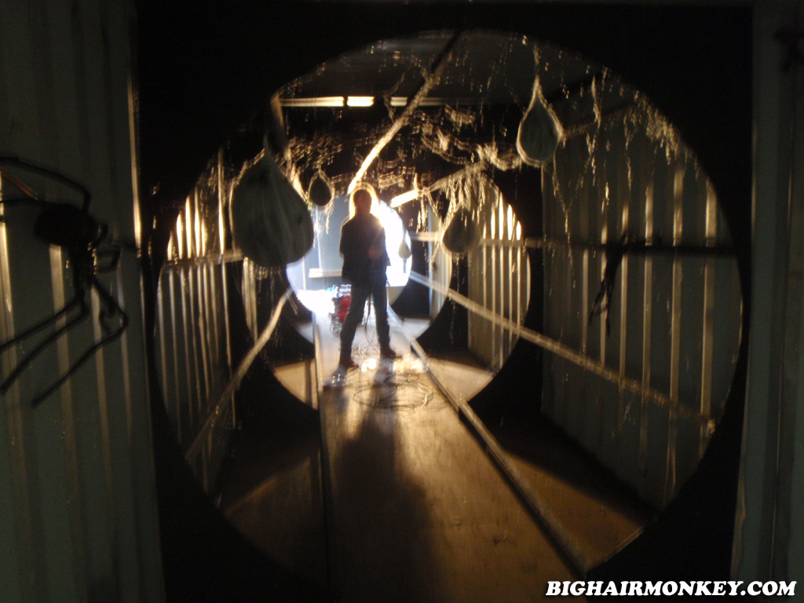

Spiders
You entered the door with a smily face on it, the door shut after you've entered. You found yourself traped in a room with GIANT SPIDERS! There is no way out, the only thing you can do is to watch the spider slower moving its way towards you. 